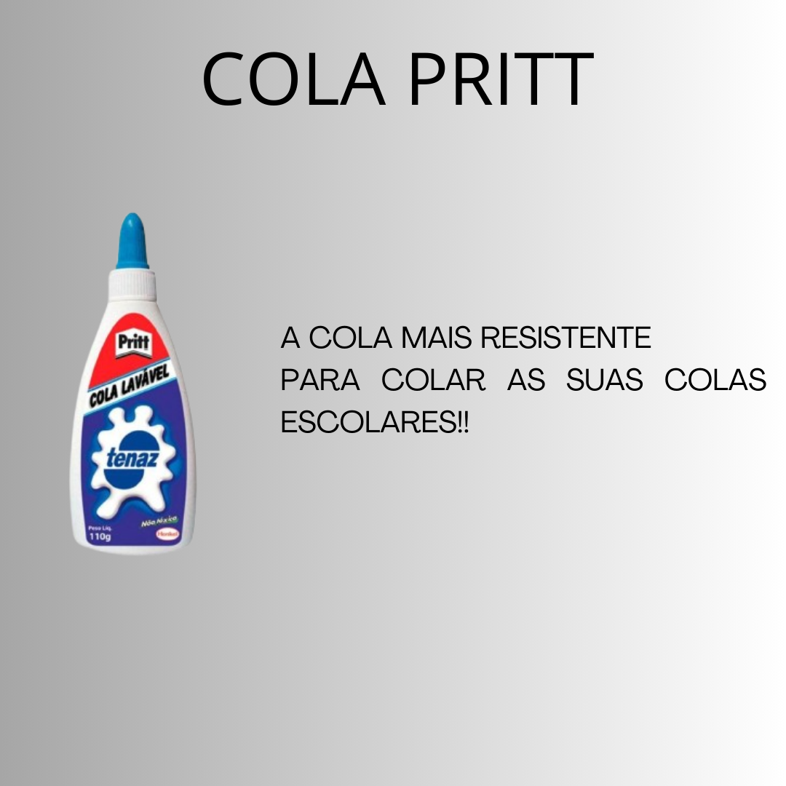

Anúncio Publicitário

Anúncio publicitário é um gênero textual que serve para divulgar produtos, serviços e empresas para determinado público-alvo, estimulando-o a realizar uma ação.
Características do Anúncio Publicitário
As principais características do Anúncio Publicitário são:
- Linguagem simples
- Caráter comercial
- Linguagem verbal e não verbal
- Textos relativamente curtos
- Textos persuasivos e atrativos
- Humor, ironia e criatividade
- Figuras e vícios de linguagem
- Uso de cores, imagens, fotografias
- Verbos no modo imperativo
Tipos de Anúncio Publicitário
Os tipos são:
- Anúncios não verbais - São aqueles que apresentam apenas imagens. Nesse caso, os autores devem usar a criatividade para conseguir passar sua mensagem de forma somente pictórica.
- Anúncios verbais - São aqueles que contam com frases geralmente curtas e de efeito. Esse tipo de anúncio é muito comum em veículos midiáticos impressos, como jornais e revistas.
- Anúncios mistos - Como o próprio nome indica, os anúncios mistos fazem uma mescla entre texto escrito e imagens.
Como fazer um Anúncio Publicitário
A sua estrutura:
- 1) Título - Tem como objetivo manifestar o reconhecimento de uma necessidade ou desejo do consumidor, selecionar/delimitar o seu público, provocar curiosidade e informar.
- 2) Corpo do texto - Deve conter a inspiração criativa do autor. Além disso, deve apresentar de forma orientada os seguintes raciocínios: abordar um desejo a ser realizado, sugerir sua satisfação e dar evidências de que o deleite será real.
- 3) Convite à ação - De maneira breve, o publicitário deve levar o leitor à ação, por meio de imperativos como “compre”, “adquira”, “assine já” etc. É válido lembrar que o anúncio publicitário é imediatista, e o consumidor deve ser convencido a agir o mais rápido possível.
Eu produzi esse anúncio, por que tinha visto um exemplo que me chamou a atenção